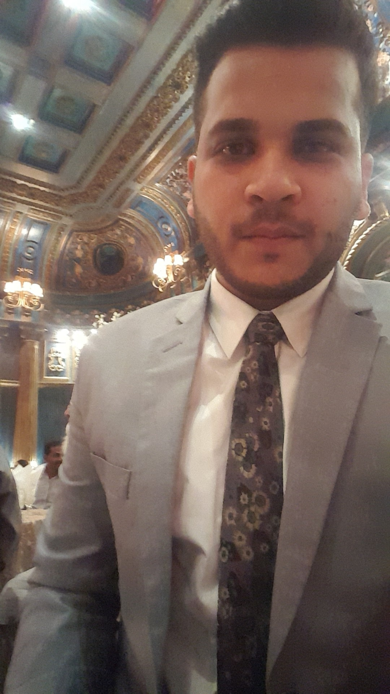
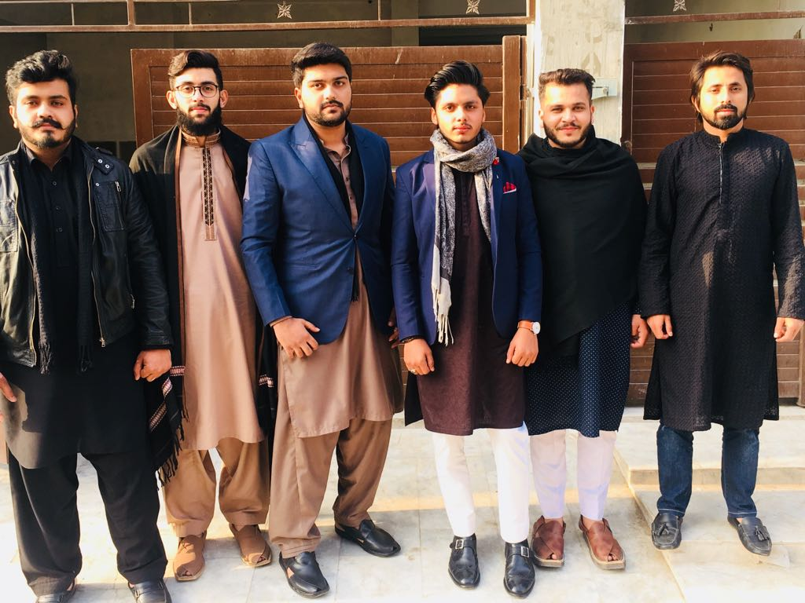
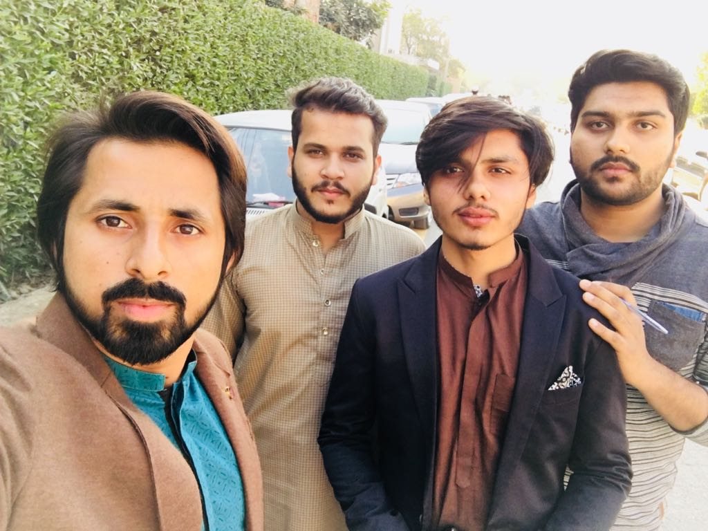
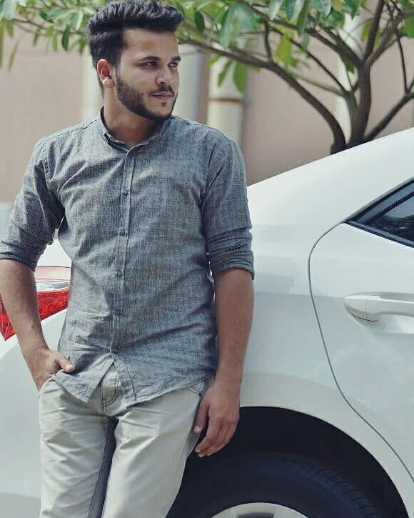
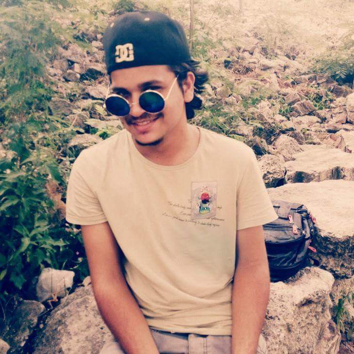

INTRODUCTION
Hello I'm NABEEL and welcome to my website, I'm a software engineer and this is my personal website where I share personal information about my life, my spiritual beliefs,life travels along with a variety of non-profit and business organizations, books, websites and other media endeavors; and my personal services.Throughout this website, you will see that my life is literally an open book with many chapters still to be written. I believe such transparency is a necessary step in our quest to express our truth (as we know it), break down our attachment to separateness, open to our desire for unity under common purpose and co-create the future we choose to live in. I sincerely hope this website will help you and me get one step closer to this objective. Please feel free to browse, comment or suggest as you are inspired to do so. I've been told that being a one degree Capricorn might have something to do with my ability to assert myself throughout my life. I believe that we choose our parents and between their imprint and my life experiences, I seem to have found a path that I can call home. My friends sometimes refer to me as the Energizer Bunny because I always seem to have energy to start new projects, take on new risks and pick myself up and start over if they don't work out. I have been an entrepreneur, pioneer and adventurer in both my personal and business endeavors. I generally have so many ideas that I must park some of them in idle until I find the opportunity to commit myself fully to the task.
HOBBIES
I really enjoy going to the gym because,it keeps me fit,it gets me out of the house, you know! it's sociable. I've met lots of new people. It gives me something interesting to do with my time.It's not very expensive, and anyone can do it! "My hobbies are all creative" ... I've always enjoyed painting and drawing. ... Because my job is technical, it's good to spend time doing something completely different. ... I enjoy spending time making things like clothes. I also like arts and crafts. I'm a creative and practical person, and like doing things with my hands."I'm an outgoing person, and like socialising and hanging out with friends.I enjoy being physically active, and spend a lot of time playing sports and team games."FRIENDS
 GALLERY
 ABOUT ME
FACEBOOK INSTRAGRAM SNAPCHAT GITHUB LINKEDIN EMAIL